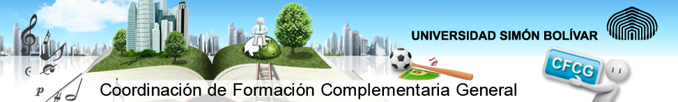
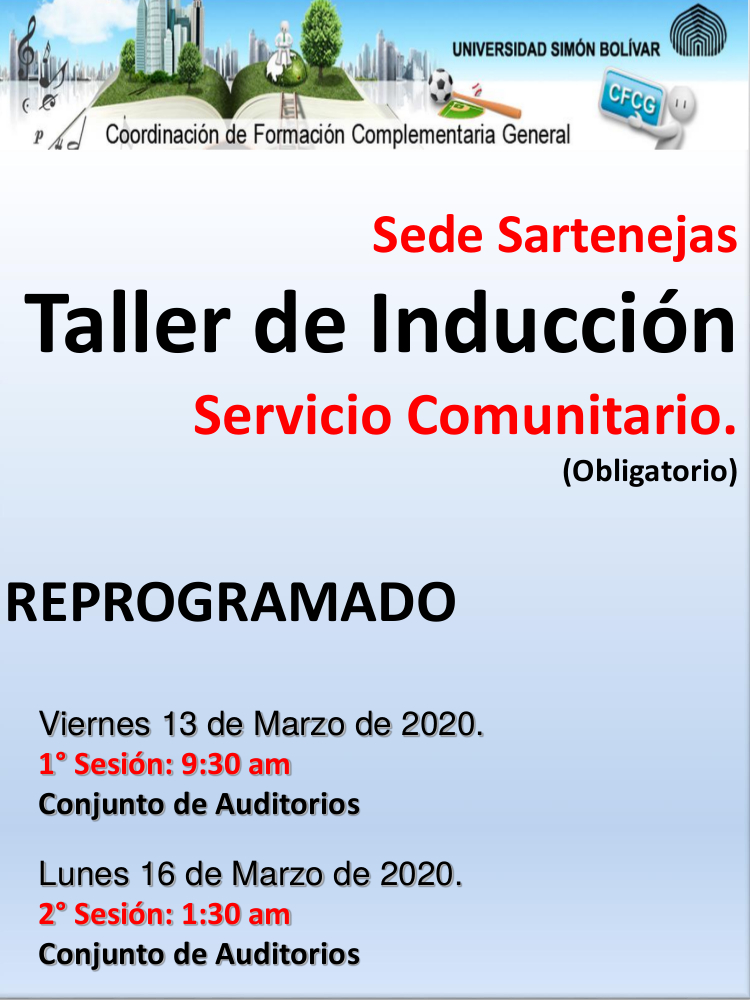

Servicio Comunitario

Estudiantes de La Sede del Litoral: clicar éste enlace
Estudiantes de La Sede Sartenejas:
Definición del Programa de Servicio Comunitario
Cumplimientos de Servicio Comunitario CERTIFICADOS
Definición del Programa de Servicio Comunitario
El programa se realiza para cumplir con la Ley de Servicio Comunitario. Es una actividad que deben desarrollar en las comunidades los estudiantes de educación superior, aplicando los conocimientos científicos, técnicos, culturales, deportivos y humanísticos adquiridos durante su formación académica, en beneficio de una comunidad.
En la USB el cumplimiento de la Ley de Servicio Comunitario se desarrolla bajo la modalidad de Proyectos de Servicio Comunitario (PSC). Cada estudiante que aspire a cumplir con la Ley debe presentar un PSC. Estos proyectos pueden ser promovidos por el propio estudiante, profesores, organizaciones de desarrollo social, alcaldías, gobernaciones, consejos comunales o por la propia Universidad, entre otros, en todos los casos debe existir un Tutor Institucional de la USB.
La Universidad a través de la Coordinación de Formación Complementaria General adscrita al Decanato de Extensión ofrece una cartera de proyectos continuos donde los estudiantes pueden incorporarse:
Ofertas de Proyectos de Servicio Comunitario
Con el Proyecto de Servicio Comunitario se busca:
-
Fomentar en el estudiante, la solidaridad y el compromiso con la comunidad como norma ética y ciudadana.
-
Hacer un acto de reciprocidad con la sociedad.
-
Enriquecer la actividad de educación superior, a través del aprendizaje servicio, con la aplicación de los conocimientos adquiridos durante la formación académica, artística, cultural y deportiva.
-
Integrar a las instituciones de educación superior con la comunidad, contribuyendo con el desarrollo de la sociedad venezolana.
-
Formar a través del aprendizaj de servicio, el capital social en el país.
Los proyectos se han clasificado en 10 áreas diferentes:
| ÁREA | CÓDIGO | COORDINADOR DE ÁREA |
| Ambiental | AB | Ruben Lugo (rlugo@usb.ve) |
| Apoyo comunitario | AC | Elinor Cones (econes@usb.ve) |
| Apoyo tecnológico | AT | Yudith Cardinale (ycardinale@usb.ve) |
| Desarrollo sustentable | DS | Ruben Lugo (rlugo@usb.ve) |
| Educativa | ED | Evelyn Abdala (eabdala@usb.ve) |
| Infraestructura | IF | Ignacio Cardona (iacardona@usb.ve) |
| Prevención de emergencias | PE | Noralih Hernández (noralihe@usb.ve) |
| Salud | SA | Noralih Hernández (noralihe@usb.ve) |
| Seguridad social | SS | Noralih Hernández (noralihe@usb.ve) |
FECHAS IMPORTANTES
En este diagrama se resumen los procesos relacionados con Servicio Comunitario así como también sus fechas límite de forma general.
FORMULACIÓN DE PROYECTOS NUEVOS
Desde la semana 1 hasta la semana 8
Los proyectos nuevos serán evaluados por la Comisión de Servicio Comunitario antes de semana 12.
INSCRIPCIÓN DEL SERVICIO COMUNITARIO
Durante la semana 12 de cada trimestre de forma regular y hasta semana 1 de forma extemporánea.
CULMINACIÓN DEL SERVICIO COMUNITARIO
Aquellos estudiantes que realicen Servicio Comunitario deben entregar el Informe Final en un lapso no mayor a un año calendario (12 meses) posterior a la fecha de inscripción de dicho Servicio Comunitario y no mayor a 30 días consecutivos a la fecha de culminación de las 120 horas de dicho Servicio Comunitario. Incluso para los graduandos aplican casi las mismas Fechas Límite para entregar al Acta de Evaluación de Proyectos de Grado o Pasantías con una semana menos de diferencia, siempre y cuando se cumplan las 120 horas en más de 90 días.